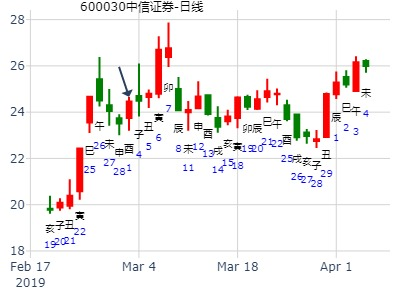
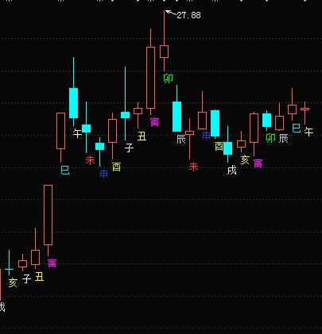
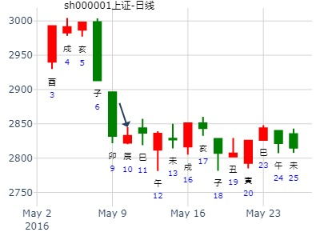
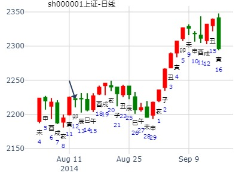
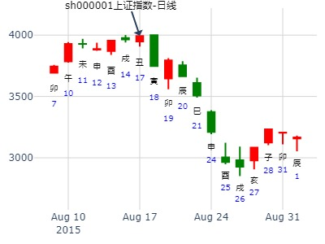
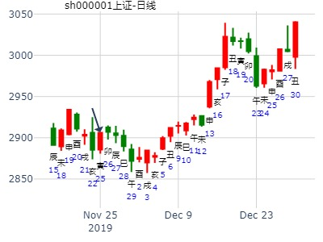
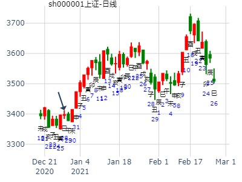

出生年：19**年 性别：男 占事: 占1月19日上证大盘走势
起卦方式：手动摇卦
公历时间：2011年1月19日0时1分 农历时间：庚寅年十二月十六日子时
干支：庚子年 癸亥月 甲戌日 甲子时
旬空：辰巳 子丑 申酉 戌亥
神煞：驿马─申 桃花─卯 日禄─寅 贵人─丑，未
兑宫：泽地萃 离宫：天水讼（游魂）
六神 【本 卦】 【变 卦】
玄武 ▄▄ ▄▄ 父母丁未土 X-> ▄▄▄▄▄ 父母壬戌土
白虎 ▄▄▄▄▄ 兄弟丁酉金 应 ▄▄▄▄▄ 兄弟壬申金
螣蛇 ▄▄▄▄▄ 子孙丁亥水 ▄▄▄▄▄ 官鬼壬午火 世
勾陈 ▄▄ ▄▄ 妻财乙卯木 ▄▄ ▄▄ 官鬼戊午火
朱雀 ▄▄ ▄▄ 官鬼乙巳火 世X-> ▄▄▄▄▄ 父母戊辰土
青龙 ▄▄ ▄▄ 父母乙未土 ▄▄ ▄▄ 妻财戊寅木 应
下周中信证券走势？
起卦方式：手动摇卦 公历时间：2019年3月1日20时3分
干 支：己亥年 丙寅月丁酉日 庚戌时
旬 空：辰巳 戌亥 (辰巳) 寅卯
兑宫：泽地萃 离宫：天水讼（游魂）
六神 【本 卦】 【变 卦】
青龙 ▄▄ ▄▄ 父母丁未土 X-> ▄▄▄▄▄ 父母壬戌土
玄武 ▄▄▄▄▄ 兄弟丁酉金 应 ▄▄▄▄▄ 兄弟壬申金
白虎 ▄▄▄▄▄ 子孙丁亥水 ▄▄▄▄▄ 官鬼壬午火 世
螣蛇 ▄▄ ▄▄ 妻财乙卯木 ▄▄ ▄▄ 官鬼戊午火
勾陈 ▄▄ ▄▄ 官鬼乙巳火 世X-> ▄▄▄▄▄ 父母戊辰土
朱雀 ▄▄ ▄▄ 父母乙未土 ▄▄ ▄▄ 妻财戊寅木 应
寅卯日财值日，涨。辰日变爻消息出来，大跌。


主帖标题: 测5月11（癸巳）日上证指数涨跌
2016.5.10 21：30 丙申 癸巳 壬辰 辛亥断：涨1.5%左右。
时间: 2016-05-10
干支: 丙申年癸巳月壬辰日辛亥时 (旬空: 午未 )
泽地萃 天水讼(游魂)
白虎 ▅▅ ▅▅ 父母未土 Ｘ→ ▅▅▅▅▅ 父母戌土
腾蛇 ▅▅▅▅▅ 兄弟酉金 应 ▅▅▅▅▅ 兄弟申金
勾陈 ▅▅▅▅▅ 子孙亥水 ▅▅▅▅▅ 官鬼午火 世
朱雀 ▅▅ ▅▅ 妻财卯木 ▅▅ ▅▅ 官鬼午火
青龙 ▅▅ ▅▅ 官鬼巳火 世Ｘ→ ▅▅▅▅▅ 父母辰土
玄武 ▅▅ ▅▅ 父母未土 ▅▅ ▅▅ 妻财寅木 应

主题：方正科技在本周的走势
甲午 壬申 乙卯丁亥 (子丑空) 甲午年七月十七(2014/08/1221:29:00)
泽地萃 天水讼
玄武 父母未土 × 父母戌土 ／
白虎 兄弟酉金 ／应 兄弟申金 ／
腾蛇 子孙亥水 ／ 官鬼午火 ／ 世
勾陈 妻财卯木 ∥ 官鬼午火 ∥
朱雀 官鬼巳火 ×世 父母辰土 ／
青龙 父母未土 ∥ 妻财寅木 ∥ 应

主帖标题: 8月18日沪市大盘
主题：沪市大盘
乙未 甲申 乙丑 甲申 (戌亥空) 乙未年七月初四(2015/08/17 15:29:47)
泽地萃 天水讼
玄武 父母未土 × 父母戌土 ／
白虎 兄弟酉金 ／ 应 兄弟申金 ／
腾蛇 子孙亥水 ／ 官鬼午火 ／ 世
勾陈 妻财卯木 ∥ 官鬼午火 ∥
朱雀 官鬼巳火 × 世 父母辰土 ／
青龙 父母未土 ∥ 妻财寅木 ∥ 应
卦显示的信息堪忧，明日收跌。

主帖标题: 代老师占卦本周涨跌？？鸿
姓名： 出生年:1981 性别：男 占事：起卦方式：手动摇卦中国预测网六爻排盘
公历时间：2019年11月25日8时53分
干 支：己亥年 乙亥月 丙寅日 壬辰时
旬 空：辰巳 申酉 戌亥 午未
兑宫：泽地萃 离宫：天水讼（游魂）
青龙 ▄▄ ▄▄ 父母丁未土 × ▄▄▄▄▄ 父母壬戌土
玄武 ▄▄▄▄▄ 兄弟丁酉金 应 ▄▄▄▄▄ 兄弟壬申金
白虎 ▄▄▄▄▄ 子孙丁亥水 ▄▄▄▄▄ 官鬼壬午火 世
螣蛇 ▄▄ ▄▄ 妻财乙卯木 ▄▄ ▄▄ 官鬼戊午火
勾陈 ▄▄ ▄▄ 官鬼乙巳火 世× ▄▄▄▄▄ 父母戊辰土
朱雀 ▄▄ ▄▄ 父母乙未土 ▄▄ ▄▄ 妻财戊寅木 应

主帖标题: 年尾上证走势怎么样？
占事:上证2020农历丑月份走势很烂吗？
起卦方式：电脑手动摇卦 (周易世界 www.zhouyiworld.com)
公历时间：2020年12月28日3时8分
干 支：庚子年 戊子月 乙巳日 戊寅时
旬 空：辰巳 午未 寅卯 申酉
神 煞：驿马─亥 桃花─午 日禄─卯 贵人─子，申
兑宫：泽地萃 离宫：天水讼（游魂）
六神 【本 卦】 【变 卦】
玄武 ▄▄ ▄▄ 父母丁未土 X-> ▄▄▄▄▄ 父母壬戌土
白虎 ▄▄▄▄▄ 兄弟丁酉金 应 ▄▄▄▄▄ 兄弟壬申金
螣蛇 ▄▄▄▄▄ 子孙丁亥水 ▄▄▄▄▄ 官鬼壬午火 世
勾陈 ▄▄ ▄▄ 妻财乙卯木 ▄▄ ▄▄ 官鬼戊午火
朱雀 ▄▄ ▄▄ 官鬼乙巳火 世X-> ▄▄▄▄▄ 父母戊辰土
青龙 ▄▄ ▄▄ 父母乙未土 ▄▄ ▄▄ 妻财戊寅木 应
